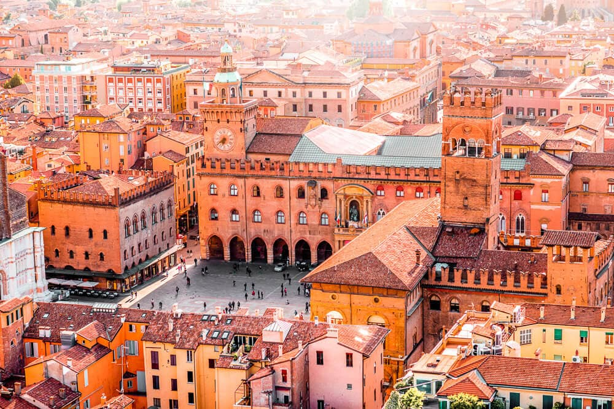
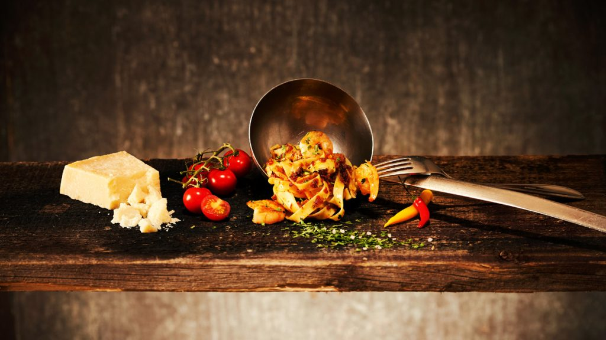

Italy™🥖
a medium sized European country with a long Mediterranean coastline, has left a powerful mark on Western culture and cuisine
Success! The website had loaded properly.

Cities
Its capital, Rome, is home to the Vatican as well as landmark art and ancient ruins. Other major cities include Florence, with Renaissance masterpieces such as Michelangelo’s "David" and Brunelleschi's Duomo; Venice, the city of canals; and Milan, Italy’s fashion capital.
Learn about David, Michelangelo's most famous scluptureCity Comparison
| City | Population | Size | Tourists (2019) | Most Popular Place |
|---|---|---|---|---|
| Rome | 2,873,000 | 1,290 km² | 10,317,000 | Pantheon |
| Milan | 1,352,000 | 181.8 km² | 6,604,400 | Duomo di Milano |
| Venice | 261,905 | 414.6 km² | 5,590,500 | St. Mark's Basilica |
| Florence | 382,258 | 102.4 km² | 5,125,700 | Uffizi Gallery |
Fun Facts
- Italy is one of Western Europe's youngest countries
- Rome is over 2,000 years old
- The country was under a dictatorship for 20 years
- Italy's last king ruled for just 36 days
- Tourists throw €1,000,000 into the Trevi Fountain each year
- 13 of Shakespeare's 38 plays are set in Italy
- Pinocchio was first published in an Italian newspaper
- Italy has more World Heritage sites than any other country
- The Sistine Chapel welcomes over 20,000 visitors every day
- Italy is home to Europe’s only three active volcanoes
- The Vatican City is the world's smallest country
- Italy is the fifth most visited country in the world
- Italy has over 1500 lakes
- Italy's highest mountain is Mont Blanc
- Batteries were invented in Italy
- The first ever bank started in Italy
- Italians invented eyeglasses
- Italians ate pasta as far back as 4BC
- Italy is the world's largest wine producer
- Italians eat salad for dessert

Italian Food
Italian Food
Here is a quote from wikipedia:
Italian cuisine (Italian: Cucina italiana, pronounced [ku'tʃiːna ita'ljaːna]) is a Mediterranean cuisine consisting of the ingredients, recipes and cooking techniques developed across the Italian Peninsula since antiquity, and later spread around the world together with waves of Italian diaspora.
Famous Italian Dishes (click the images to learn more about them!)


How to Cook Dried Pasta, Step-by-Step
- Step 1: Boil Water
- Start with a very large pot of water, about 6 quarts per pound of pasta. Bring it to a rapid boil.
- Step 2: Add Salt
- Put in a lot of salt, about 3 tablespoons. If you taste the water, it should taste like the sea.
- Step 3: Add the Pasta
- Drop in the pasta while the water is at a boil and give it a gentle stir.
- Step 4: Stir
- Stir it occasionally while it cooks. Use the cooking time on the pasta package as a guide.
- Step 5: Taste the Pasta
- But watch out — it's hot! Sample the pasta at about 2 minutes shy of the indicated time. It should be al dente. You'll finish cooking it in the sauce.
- Step 6: Drain
- Drain the pasta. Just be sure to save about 1 cup of the pasta water. If you have a pot with a colander insert, use it to drain the pasta. If not, drain the pasta in a colander set in the sink.
- Step 7: Removing Ravioli
- If you're cooking ravioli, use a slotted skimmer and gently lift the ravioli a few at a time.
- Step 8: Stir In the Sauce
- Add the pasta to your sauce and finish cooking it in the sauce. Give it a stir to coat.
- Step 9: Add Pasta Water
- Ladle a few tablespoons of the pasta water at a time until you have the right consistency to your sauce. Remember, the pasta will absorb the liquid. Tip: Pasta water helps to thicken the sauce.
- Step 10: Buon Appetito!
- Simmer over medium-low heat — it'll help the pasta soak up the sauce. Follow your recipe's instructions for finishing the dish. And that's all there is to it. Perfecto!